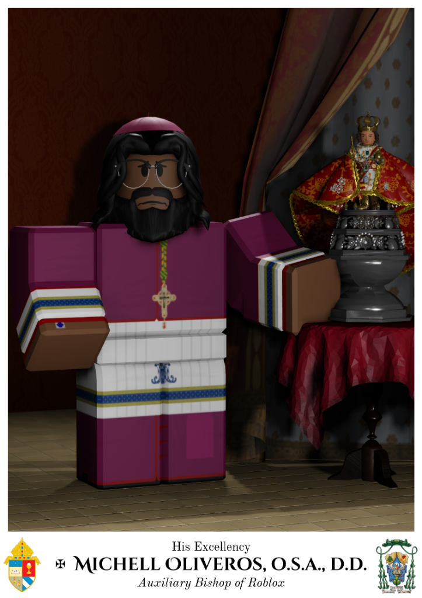
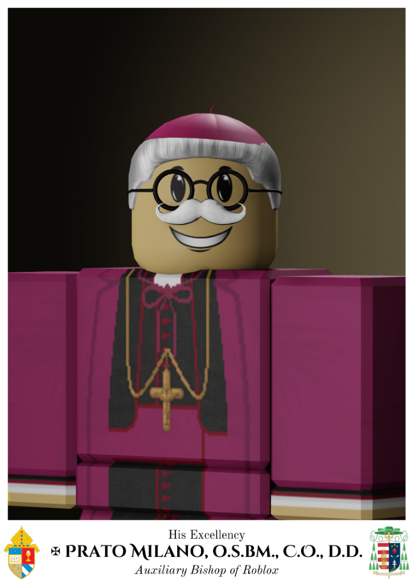

Leadership & Structure
The Archdiocese operates under a clear, organized hierarchy to ensure smooth administration, reverent ceremonies, and active community engagement.
The Archdiocesan Curia
Archbishop
Head of the Archdiocese
The Archbishop is the primary spiritual and administrative leader of the AOR, overseeing all groups, activities, and structural decisions.
Auxiliary Bishops
Senior Administrators
Assist the Archbishop in the governance of the Archdiocese, managing specific regions, groups, or administrative duties.


Clergy
Monsignors
Senior priests recognized for their exceptional service to the Archdiocese.
Priests
Ordained members who celebrate masses, administer sacraments, and lead local parish communities within Roblox.
Deacons
Assisting clergy who support the priests and bishops during ceremonies and community outreach.
Laity Leadership
Group Commanders & Directors
Leaders of affiliated groups such as the Knights of Columbus. They ensure their organizations operate in accordance with AOR guidelines and contribute positively to the community.